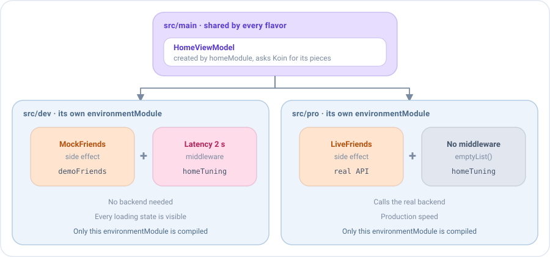

Inyección de dependencias y entornos¶
Emanate no depende de ningún framework de inyección de dependencias. Dondequiera que necesita un ViewModel, te lo pide con una función, así que puedes usar Koin, un contenedor manual o simples constructores.
emaScreen(
screenContent = HomeScreenContent(),
viewModel = { HomeViewModel(getFriendsUseCase, HomeState()) },
onEvent = { /* ... */ }
)
Y como el comportamiento de una pantalla es una lista de piezas (middlewares, reducers y side effects) que se pueden sustituir, la misma inyección decide cómo se comporta la pantalla: el backend real en producción, datos simulados en una build de desarrollo, latencia o errores en QA, un fake en los tests. El ViewModel, la pantalla y el resto de la app se quedan exactamente igual.
Un ViewModel por pantalla¶
Emanate llama a la función una vez, cuando la pantalla se abre por primera vez, y conserva el ViewModel mientras existe la pantalla: mira Cómo se mantiene vivo el ViewModel. La función debe crear el ViewModel, no devolver uno que ya existe, para que cada pantalla tenga el suyo. Un singleton lo compartirían todas las pantallas de ese tipo y conservaría el estado de una pantalla que ya se cerró.
Con Koin¶
Así lo hace la app sample. Arranca Koin después de inicializar Emanate:
class EmaSampleApplication : Application() {
override fun onCreate() {
super.onCreate()
Emanate.init(EmaConfiguration.Android(debug = BuildConfig.DEBUG))
startKoin {
androidContext(this@EmaSampleApplication)
modules(dataModule, useCaseModule, uiModule)
}
}
}
Los repositorios suelen ser singletons y los casos de uso se crean cuando hacen falta. Declara los ViewModels como
factory, para que cada pantalla tenga el suyo. El estado inicial también se puede inyectar, lo que mantiene el estado
por defecto en un único sitio:
val dataModule = module {
single<Repository> { RemoteRepository() }
}
val useCaseModule = module {
factory { GetFriendsUseCase(get()) }
}
val uiModule = module {
factoryOf(::HomeViewModel)
factory { HomeState() }
}
emaScreen(
screenContent = HomeScreenContent(),
viewModel = { get<HomeViewModel>() },
onEvent = { /* ... */ }
)
El store de un backup¶
Un ViewModel que sobrevive a la muerte del proceso recibe su EmaStateStore en el constructor. La
función que crea el ViewModel recibe el store de la pantalla, así que pásaselo. Con Koin, como parámetro:
val uiModule = module {
factory { (stateStore: EmaStateStore) -> HomeViewModel(get(), stateStore) }
}
emaScreen(
screenContent = HomeScreenContent(),
viewModel = { store -> get<HomeViewModel> { parametersOf(store) } },
onEvent = { /* ... */ }
)
En las plataformas sin store, o en un test que no comprueba el estado guardado, pasa EmaStateStore.None.
Inyectar piezas¶
Además de casos de uso, un ViewModel puede recibir sus middlewares, reducers y side effects. Un ViewModel que recibe una pieza en lugar de declararla no sabe cuál le llega.

La pantalla de inicio carga los amigos del usuario. Saca del ViewModel el side effect que los carga, como una clase que
implementa SideEffect. Un type alias mantiene las firmas cortas:
typealias FriendsEffect = SideEffect<HomeState, HomeAction, HomeEvent, HomeAction.RefreshRequested>
class LiveFriends(private val getFriendsUseCase: GetFriendsUseCase) : FriendsEffect {
override val actionType = HomeAction.RefreshRequested::class
override val concurrency = SideEffectConcurrency.Leading
override suspend fun SideEffectScope<HomeState, HomeAction, HomeEvent>.invoke(action: HomeAction.RefreshRequested) {
dispatch(HomeAction.SideEffects.QueryStarted)
getFriendsUseCase(GetFriendsUseCase.Input(state.query))
.onSuccess { friends -> dispatch(HomeAction.SideEffects.QueryLoaded(friends)) }
.onFailure { dispatch(HomeAction.SideEffects.QueryFailed) }
}
}
El ViewModel lo recibe y lo instala con add. Los middlewares se pueden recibir de la misma forma:
class HomeViewModel(
private val loadFriends: FriendsEffect,
private val tuning: List<EmaMiddleware<HomeState, HomeAction, *>> = emptyList(),
initialState: HomeState = HomeState()
) : EmaViewModel<HomeState, HomeAction, HomeEvent>(initialState) {
override fun setup() = source {
// Antes que nada, para que vean cada acción primero
middlewares(MiddlewarePosition.First) {
tuning.forEach { add(it) }
}
reducers {
add<HomeAction> { action ->
when (action) {
is HomeAction.SideEffects.QueryStarted -> state.copy(isLoading = true)
is HomeAction.SideEffects.QueryLoaded -> state.copy(isLoading = false, friends = action.friends)
is HomeAction.SideEffects.QueryFailed -> state.copy(isLoading = false, dialog = HomeDialog.LoadError)
// ...
}
}
}
sideEffects {
add(loadFriends)
add<HomeAction.FriendClicked> { action -> publish(HomeEvent.FriendSelected(action.friend)) }
}
}
}
Un mock es una implementación más de la misma pieza. Envía las mismas acciones que la real, así que el resto de la pantalla no nota la diferencia:
class MockFriends(
private val friends: List<User>?,
private val latency: Duration = 500.milliseconds
) : FriendsEffect {
override val actionType = HomeAction.RefreshRequested::class
override val concurrency = SideEffectConcurrency.Leading
override suspend fun SideEffectScope<HomeState, HomeAction, HomeEvent>.invoke(action: HomeAction.RefreshRequested) {
dispatch(HomeAction.SideEffects.QueryStarted)
delay(latency)
dispatch(if (friends != null) HomeAction.SideEffects.QueryLoaded(friends) else HomeAction.SideEffects.QueryFailed)
}
}
MockFriends(friends = null) muestra el diálogo de error, MockFriends(emptyList()) la lista vacía y
MockFriends(hundredFriends) una larga. Los reducers y los eventos no cambian: la pantalla sigue mostrando su estado de
carga, su diálogo de error y su navegación exactamente como en producción.
Dos comportamientos por flavor en Android: dev y pro¶
Este ejemplo es específico de Android, la única plataforma con product flavors. En las demás plataformas obtienes el mismo resultado eligiendo los módulos en cada target, o con una factoría manual.
Decide las piezas donde se crea el ViewModel: en la inyección de dependencias de cada build. Con dos flavors de
Android, dev funciona sin backend y pro llama al real:

// build.gradle.kts de la app
android {
flavorDimensions += "environment"
productFlavors {
create("dev") { dimension = "environment" }
create("pro") { dimension = "environment" }
}
}
El source set main declara lo que comparten ambas builds, y el source set de cada flavor declara un módulo con el mismo nombre y sus propias piezas:
// src/main: igual en todas las builds
val homeModule = module {
factory {
HomeViewModel(loadFriends = get(), tuning = get(named("homeTuning")), initialState = get())
}
}
// src/pro: el backend real
val environmentModule = module {
factory<FriendsEffect> { LiveFriends(get()) }
factory<List<EmaMiddleware<HomeState, HomeAction, *>>>(named("homeTuning")) { emptyList() }
}
// src/dev: amigos simulados y una red lenta
val environmentModule = module {
factory<FriendsEffect> { MockFriends(friends = demoFriends) }
factory<List<EmaMiddleware<HomeState, HomeAction, *>>>(named("homeTuning")) {
listOf(middlewareDelayOf(HomeAction.RefreshRequested::class, 2.seconds))
}
}
startKoin {
modules(dataModule, useCaseModule, homeModule, environmentModule)
}
Cada build compila solo el environmentModule de su flavor, así que los mocks nunca llegan a la build pro. La lista
de middlewares tiene nombre porque Koin no distingue dos tipos List. Lo mismo funciona con build types (debug,
qa, release), con cualquier otro framework de inyección de dependencias, o con una factoría manual.
Los entornos del sample¶
La app sample aplica esta idea a sus repositorios, con tres flavors. Cada uno tiene su environmentModule en
src/<flavor>, que enlaza los dos repositorios, y un AppEnvironment que la pantalla de login muestra como una etiqueta en una
esquina, salvo en pro:
| Flavor | LoginRepository |
FriendsRepository |
Para |
|---|---|---|---|
mock |
MockLoginRepository, instantáneo |
InMemoryFriendsRepository con tres amigos, sin guardar nada |
Demos y trabajar sin conexión: siempre empieza igual |
dev |
MockLoginRepository, 2 segundos |
DelayedFriendsRepository sobre MapFriendsRepository |
Ver los estados de carga y las animaciones de una red lenta |
pro |
ApiLoginRepository sobre un LoginApi |
MapFriendsRepository |
El camino real: el LoginApi es la pieza que sustituye un cliente de red |
// app/src/mock
val environmentModule = module {
single { AppEnvironment("mock") }
single<LoginRepository> { MockLoginRepository(latency = ZERO) }
single<FriendsRepository> { InMemoryFriendsRepository(demoFriends) }
}
Los casos de uso, los ViewModels y las pantallas son los mismos en las tres builds. Los repositorios se llaman por el tipo
de implementación que son, sin el sufijo Impl. Cada implementación vive en el source set del entorno que la usa (MockLoginRepository en
src/mockDev, compartido por mock y dev), así que la build de producción no lleva clases que no usa; el tono de la
etiqueta de pro es Invisible, así que ahí no se dibuja nada. Elige la variante en Build Variants de Android Studio, o con
./gradlew :app:assembleMockDebug. Cada flavor tiene su propio application id, así que las tres se pueden instalar a la vez.
Qué puede cambiar un entorno¶
Sustituyes exactamente el comportamiento que quieres cambiar, al tamaño que quieras: una respuesta, un retraso, una
regla. Sin Emanate, esto suele significar un if (isDemo) dentro del ViewModel, una implementación falsa de todo un
repositorio, o una librería de mocks que solo funciona en los tests.
Latencia¶
middlewareDelayOf retrasa las acciones de un tipo antes de que lleguen a los reducers y a los side effects, para ver
cada estado de carga como lo mostraría una red lenta:
val slowRefresh = middlewareDelayOf<HomeState, HomeAction, HomeAction.RefreshRequested>(
HomeAction.RefreshRequested::class,
2.seconds
)
Con nextAfter, un middleware también puede decidir el retraso, por ejemplo uno aleatorio para cada acción:
val randomLatency = middlewareOf<HomeState, HomeAction, EmaAction>(EmaAction::class) {
nextAfter { delay(Random.nextLong(200, 1500)) }
}
Errores y funcionalidades desactivadas¶
Un middleware puede sustituir una acción con next(action). Este convierte cada refresco en un fallo, para comprobar el
diálogo de error en una build que habla con el backend real:
val failingRefresh = middlewareOf<HomeState, HomeAction, HomeAction.RefreshRequested>(HomeAction.RefreshRequested::class) {
next(HomeAction.SideEffects.QueryFailed)
}
Y uno que no llama a next detiene la acción: nunca llega a los reducers ni a los side effects. Por ejemplo, para
mantener desactivada una funcionalidad en una build:
val profilesDisabled = middlewareOf<HomeState, HomeAction, HomeAction.FriendClicked>(HomeAction.FriendClicked::class) {
// Sin llamar a next: los perfiles no se pueden abrir en esta build
}
Una regla de negocio distinta¶
Los reducers también se pueden sustituir, para cambiar una regla de negocio en una build. Una build de desarrollo puede dar a todos los usuarios el rol de administrador, para mostrar las pantallas que solo ven los administradores, sin una cuenta especial:
class HomeViewModel(
private val userReducer: EmaReducer<HomeState, HomeInitializer> = reducerOf(HomeInitializer::class) { initializer ->
when (initializer) {
is HomeInitializer.HomeUser -> state.copy(user = initializer.user)
}
}
) : EmaViewModel<HomeState, HomeAction, HomeEvent>(HomeState()) {
override fun setup() = source {
reducers { add(userReducer) }
}
}
// dev
HomeViewModel(
userReducer = reducerOf(HomeInitializer::class) { initializer ->
when (initializer) {
is HomeInitializer.HomeUser -> state.copy(user = initializer.user.copy(role = Role.ADMIN))
}
}
)
El estado inicial¶
Para QA, abre una pantalla ya en el estado que quieres comprobar, sin repetir los pasos que llevan hasta él. Recibe el estado inicial en el constructor, con el habitual como valor por defecto, y pasa el que necesites:
class HomeViewModel(
private val loadFriends: FriendsEffect,
initialState: HomeState = HomeState()
) : EmaViewModel<HomeState, HomeAction, HomeEvent>(initialState) {
// ...
}
// QA: una búsqueda sin resultados
HomeViewModel(
loadFriends = MockFriends(friends = emptyList()),
initialState = HomeState(query = "Zoe", friends = emptyList())
)
Con los módulos de entorno de los flavors, cada build aporta su
propio estado y el homeModule de src/main lo pasa con initialState = get():
// src/pro
val environmentModule = module {
factory { HomeState() }
}
// src/dev
val environmentModule = module {
factory { HomeState(query = "Zoe", friends = emptyList()) }
}
El estado se construye a mano, así que mantenlo válido.
Los tests¶
Los tests crean el ViewModel con las piezas que necesitan, sin librería de mocks y sin dispositivo:
HomeViewModel(loadFriends = MockFriends(friends = null)). Mira
Testing.
Inyectar la configuración¶
Por defecto los ViewModels usan la configuración establecida con Emanate.init, así que no necesitan recibirla. Para
inyectarla en su lugar, por ejemplo en una librería que no puede llamar a Emanate.init o en un módulo con su propia
configuración, recíbela en el constructor y pásala al ViewModel. Mira
Configuración explícita.
class HomeViewModel(
private val getFriendsUseCase: GetFriendsUseCase,
configuration: EmaConfiguration
) : EmaViewModel<HomeState, HomeAction, HomeEvent>(HomeState(), configuration)
Con Koin, decláralo como un single:
val uiModule = module {
single { EmaConfiguration.Android(debug = BuildConfig.DEBUG) }
factoryOf(::HomeViewModel)
}
Los casos de uso solo reciben el dispatcher io de la configuración, en el constructor:
val useCaseModule = module {
factory { GetFriendsUseCase(get(), get<EmaConfiguration>().dispatchers.io) }
}
Pautas¶
- Declara el ViewModel como
factory. Cada pantalla necesita su propia instancia; unsinglecompartiría el estado de una pantalla que ya se cerró. - Inyecta las piezas, no el ViewModel, y solo las que un entorno pueda cambiar. Recibe en el constructor el side effect del backend, los middlewares o el estado inicial, con los de producción como valores por defecto. Lo que nunca cambia se queda dentro del ViewModel, para que el constructor no crezca con cada detalle.
- Elige el entorno en la inyección de dependencias, nunca en el ViewModel. Un
if (isDemo)dentro del ViewModel es una rama que producción lleva consigo y que nadie testea. - Mantén los mocks fuera de la build de producción. Decláralos en el source set de su flavor o build type, como en el ejemplo de los flavors.
- Ejecuta primero los middlewares que simulan condiciones, con
MiddlewarePosition.First, para que actúen antes que los middlewares de la pantalla. - Usa un plugin para una funcionalidad completa que un entorno instala o no, como las analíticas o un overlay de debug. Mira Plugins.